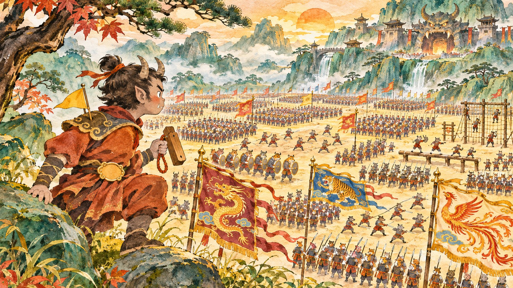

《西遊記》第 108 集：三寸之舌
一、巡山小妖敲銅鑼，大王叫我來巡山
上集咱們講到，孫悟空在獅駝嶺上遇到了一個巡山的小妖怪——小鑽風。他想從小妖怪嘴裡探聽出獅駝嶺的虛實，於是說要考一考小鑽風：
「小鑽風，你要是答不對問題，說明你就是假的！你先來聽第一題：咱們大王都有些什麼本事？」
小鑽風胸有成竹地拍著胸脯說：
「這個我知道！我們大大王神通廣大、本領高強，曾經一口吞了十萬天兵！」
就這一句話，孫悟空心頭覺得一緊，但是他表面上依然不動聲色，輕輕搖了搖頭：
「露餡兒了吧？你是假的！」
「我怎麼是假的？」
「大大王身體能有多大呀？嘴能有多大呀？怎麼可能吞得下十萬天兵？」
「長官，原來您不知道啊！大大王會變化，變大了能頂天，變小了就像一粒芝麻。有一次王母娘娘設蟠桃宴，沒給大大王發請柬，大大王一怒之下就打到天庭，玉皇大帝就派十萬天兵天將來捉他。結果大大王忽然變得頂天立地，張開大嘴要把十萬天兵都吞到肚子裡去，嚇得十萬天兵天將轉身就跑啊，還關閉了南天門……剛剛我就是誇張了一點，大大王是想吞沒有吞，能吞沒吞著。」
孫悟空心說：這大魔頭還真的有些本事，類似的事俺老孫也幹過。
二、大聖巧變總鑽風，腰牌對暗號無差
「第一題算你答對了！我再問你第二題，仔細聽了啊！咱們二大王有什麼本事啊？」
「呃，二大王身高在三丈開外，臥蠶眉、丹鳳眼，可是說話的聲音像個女人。他的牙長得像扁擔，鼻子比牙還要長呢！打起仗來，鼻子抽在你身上能把你抽扁，捲在你身上一用力呀，就能把你擠碎了！」
孫悟空心想：鼻子捲人的妖怪倒是不難對付，難道還能比七絕山稀柿衕裡的長蟲厲害？
「好，第三題，三大王本領如何呀？」
「哎呀，三大王可厲害了！他可不是人間的凡物啊，他來自天上，號稱『雲程萬里鵬』。他原來是一隻大鵬鳥，翅膀可大了，一振雙翅能扶搖直上九萬里！他隨身有一件寶貝，叫陰陽二氣瓶，如果把人裝在瓶子裡，一時三刻就會化為膿水呀！」
孫悟空默默地點點頭，心說：《莊子》在《逍遙遊》裡倒是記載過這種大鵬鳥——「北冥有魚，其名為鯤。鯤之大，不知其幾千里也；化而為鳥，其名為鵬。鵬之背，不知其幾千里也；怒而飛，其翼若垂天之雲。」
這話什麼意思呀？
據傳說呀，北海裡有一條魚，它的名字叫鯤，這個鯤非常巨大，不知道有幾千里大。鯤後來變化成鳥，這個鳥的名字呢，就叫鵬。鵬的脊背，也不知有幾千里長。當它振翅高飛的時候，翅膀啊，就像是天邊垂下來的雲彩。
孫悟空琢磨著：一隻大鳥，我倒是不怕，只是得小心他的瓶子。平頂山上的紫金紅葫蘆、小雷音寺裡的金鐃，就是前車之鑑。
「那我問你，是哪個大王想吃唐僧肉啊？」
孫悟空沒有動一刀一棒，是怎麼從小鑽風嘴裡問出所有情報的？
⭐ 故事小發現：他憑藉生動傳神的話語和機智的偽裝，摸透了小妖怪膽小的心理。話語用得好，比刀槍兵器還要厲害百倍！
三、三寸之舌編神話，齊天大聖磨長棒
小鑽風一轉眼珠，斜眼看了看孫悟空：
「呃，長官，這個您都不知道啊？」
孫悟空把眼一瞪：
「我怎麼不知道？這不是出題考你的嗎？」
小鑽風嚇得連聲道：
「是是是！大大王和二大王一直住在獅駝嶺，三大王是後來的。在獅駝嶺西邊有一個獅駝國，三大王在五百年前把獅駝國的國王、王后、文武百官和所有的老百姓都吃了個乾乾淨淨，後來呢，他就住在那兒了。不知他怎麼聽說有個唐朝的和尚要從這兒經過，他是十世修行的好人，說吃了他的肉啊能長生不老！可是據說他有個叫孫悟空的徒弟非常厲害，於是三大王就來到獅駝嶺，和大大王、二大王結為兄弟，就是想聯手對付那個孫悟空。得了唐僧肉呢，三位大王要平均分成三份。據說呀，我們這些手下的妖兵妖將也能分點肉湯喝，不知道能不能管用啊。長官，您說說，喝點唐僧肉的肉湯，是不是也能多活幾百年呢？」
孫悟空聽了這話，勃然大怒。他火眼金睛一瞪，金光四射，牙齒咬得咯吱吱直響，恨不得挫碎鋼牙：
「可惱啊！可惱！俺老孫保著師父取經，一路上披肝瀝膽，你們這些妖怪居然想坐享其成！明知道俺師父是十世修行的好人，卻天天盼著吃他的肉！來來來，俺讓你吃！吃俺老孫一棒！」
他抽出金箍棒，只聽「咔嚓」一聲——
可憐這小鑽風啊，天天盼著喝肉湯，自己卻成了肉餅。
四、棒子磨成三尺利，專削妖怪腦袋瓜

孫悟空解下小鑽風身上的腰牌戴在自己身上，把令旗往後脖頸子上一插，腰間掛了鈴鐺，手裡敲著梆子，嘴裡唸唸有詞。他搖身一變，變成了小鑽風的模樣。
他要幹什麼呀？
他呀，要找那三個妖魔算帳！
這妖怪可不難找。繞過一個山坳，只聽得一陣人喊馬嘶。孫悟空來到一片開闊之地，很遠的地方有一座山峰。山峰就像是一座城樓，洞口就像是一扇大大的城門。城門前又有護城河，護城河上放著吊橋。
在這片開闊之地上，跑動著黑壓壓、密密麻麻的妖怪，粗粗一看，至少得有一萬之眾。小妖怪們手裡拿著各種各樣的兵器：刀、槍、劍、戟、斧、鉞、鉤、叉、鞭、鐧、錘、抓、鎲、棍、槊、棒、拐子、流星；帶尖的、帶鉤的、帶刃的、帶刺的、帶峨嵋刺的、帶鐵鎖鏈的，等等等等，什麼都有。
一萬多名小妖啊，排成了各種戰陣，每個戰陣都有一面獨特的戰旗：前軍紅旗似火焰，後軍黑旗似烏煙；左右旗青龍白虎，前後旗朱雀玄武；飛龍旗子午盤繞，飛鳳旗繡帶飛旋，飛豹旗凌空煞氣，飛虎旗如嘯林間。
什麼十二太保旗、十八羅漢旗、天罡旗、地煞旗、門旗、令旗、護背旗、大將旗、大纛旗、這個旗、那個旗，大旗、小旗、半大旗，光是旗子就遮住了半邊天。孫悟空仔細數了數，發現了一些規律：每二百五十名小妖組成一個戰陣，一共有整整四十面陣旗。
「看來，這練兵場果然有一萬名妖兵啊！」
他暗暗點點頭：
五、小妖嚇得面如土，倒豆子般吐真情
「哎呀，太白金星啊太白金星，果然沒說大話騙我！這大概是俺老孫在西行路上見到的最多的一夥妖怪了。看似不但是妖怪多，而且訓練有素，真是不好對付啊！我現在變做小鑽風的模樣進去見妖王，應該說不費吹灰之力；不過萬一被他們識破我的身分，我從洞裡往外衝，要衝過這四十座戰陣，那可真不容易啊！這可怎麼辦呢？不如我說幾句大話，看看能不能起點作用？」
想到這兒，孫悟空打定主意。他搖頭晃腦，敲著梆子，搖著鈴鐺，穿過一萬多名妖兵，直奔獅駝洞洞門而來。
剛剛穿過十幾座戰陣，就有小妖問：
「小鑽風，回來了？」
孫悟空裝作沒聽見，繼續往裡走。
剛剛穿過二十幾座戰陣，有個小妖一把扯住孫悟空：
「小鑽風來了！」
孫悟空這才停下腳步：
「來了。」
孫悟空編造自己把金箍棒磨細了準備來削人，這段故事是不是很有趣？
⭐ 故事小發現：孫悟空天生富有幽默感，他用誇張搞笑的語言把兇惡的氣氛化作了智慧的遊戲，讓人讀了忍俊不禁，這正是大聖最迷人的英雄魅力！
六、青獅白象大鵬鳥，三位魔王神通天
「你一大早去巡山，可曾撞見那個什麼孫悟空？」
「撞見了！正在那兒磨棍子呢！」
一聽這話，身邊的小妖「嘩啦」一下就圍過來了。
這些天，為了順利吃到唐僧肉，三個妖王逼著這些小妖們沒日沒夜地操練武藝和陣法。這幾萬人拼著不睡覺，就這麼進行魔鬼訓練，不就是為了對付孫悟空嗎？「孫悟空」這三個字，這群妖兵不知聽了多少遍，耳朵都快磨出繭子來了，可這孫悟空到底長什麼樣啊？沒有一個人知道。可以說，這群小妖的心裡就有幾萬種不一樣的孫悟空。
一聽說有人見到了真的孫悟空，大夥兒都不操練了，把這個假的小鑽風圍了個裡三層外三層。
孫悟空索性高高地站到了一個黑熊精的肩膀上，放開嗓子，對著眾妖精說：
「剛才我在巡山路上看到了一個黑影。那黑影啊，坐在山澗旁邊，遮住了太陽！他光是坐在那兒就有幾十丈高啊，手裡拿著一根一百多丈的棍子。那棍子烏黑鋥亮，兩頭裹著金箍。只見那黑影抄起一把澗水，灑在一塊大山石上，把那棍子放在山石上磨！那棍子磨石頭的聲音，就像是天空中的滾雷啊，每磨一下，我心裡就『噗通』跳上一跳！只聽他嘴裡喃喃念叨著：『金箍棒啊金箍棒，我可是好久沒讓你開葷了！這回你要顯顯神通，前面有幾萬個小妖怪，我讓你一次過足癮！』呃，我說各位啊，等他的棒子磨亮了，恐怕最先遭殃的就是咱們這些在門前操練的一萬多弟兄！你們想想啊，那孫悟空走過來，看見咱們，是不是還得以為咱們專門埋伏在這兒跟他打仗呢？」
那些小妖怪聽得是膽戰心驚啊，但一想到讓人長生不老的唐僧肉，每個人又嚥了嚥口水。有個豺狼精怯生生地問道：
「那你看見那個唐三藏了嗎？」
七、行者大笑入魔窟，群妖恭迎總鑽風
「唐三藏啊？看到了！瘦小枯乾，總共身上也沒有幾兩肉啊，估計還不夠咱們一個大王塞牙縫的呢！我估計啊，就算咱們贏了孫悟空、抓住了唐三藏，恐怕肉湯也分不到咱們嘴裡，就是三位大王估計都不夠分。我說弟兄們，沒有唐僧肉，咱還憑什麼在這兒賣命啊？啊？難道真的想挨一下齊天大聖的金箍棒嗎？」
喲，一席話說完之後，偌大的練兵場鴉雀無聲。
不一會兒，就有三三兩兩的妖怪，垂著頭往外擠。擠出人群之後，頭也不回地走了。隨後妖怪們越走越多、越走越快，一萬多妖兵走了得有八千！剩下這兩千多小妖啊也沒精神了，垂頭喪氣地往那一坐，眼睛望著天或者看著地，在那兒發呆，看來也沒打仗的心思了。
孫悟空心裡暗笑：真是「人要留名，樹要留影」啊！沒想到俺老孫的名頭能有這麼大，輕輕鬆鬆幾句話，就說散了一萬妖兵！人說「三寸不爛之舌，可敵百萬雄兵」，看來所言不差，俺老孫的口才恐怕也不輸給戰國時的蘇秦、張儀呢！
嘿，蘇秦、張儀是誰啊？
喲，這可是兩位不得了的人物啊！戰國時期，秦國非常強大，其他六個國家害怕秦國攻打他們，但是又不知該怎麼辦。這時候呢，一個叫蘇秦的人橫空出世了。蘇秦憑著自己的政治遠見和口才，去拜見齊、楚、燕、韓、趙、魏六國的君主，說服六個國家聯合起來抵抗秦國，這就是著名的「合縱」，為六個國家贏得了十幾年的和平。
張儀呢，和蘇秦有著共同的老師，就是那位大名鼎鼎的鬼谷子。張儀到了秦國，告訴秦惠王：不用擔心六國聯合起來與咱們大秦為敵，其實他們六國相互之間勾心鬥角，聯盟根本沒有那麼穩固。張儀採用「連橫」策略，不斷地出使六國，憑著他的機智和口才打破了六國的聯盟，這才有了後來秦國連滅六國、統一天下的故事。
孫悟空得意洋洋地進了獅駝洞。他不知道，這獅駝洞裡等待他的，是怎樣的兇險。
欲知後事如何，咱們下集接著講！